실제 화면 스크린샷으로 따라가는 단계별 설정 가이드. restricted scopes / redirect_uri_mismatch 오류를 해결합니다.
최근 Google 보안 정책이 강화되면서, Make에서 Google Drive / Gmail 같은 기능을 사용할 때 단순 로그인만으로 연결되지 않는 경우가 생겼습니다.
특히 아래 기능은 제한됩니다.
그래서 Google Cloud Console에서 직접 OAuth 인증을 설정해줘야 합니다.
아래 사이트에 접속해 Google 계정으로 로그인합니다.
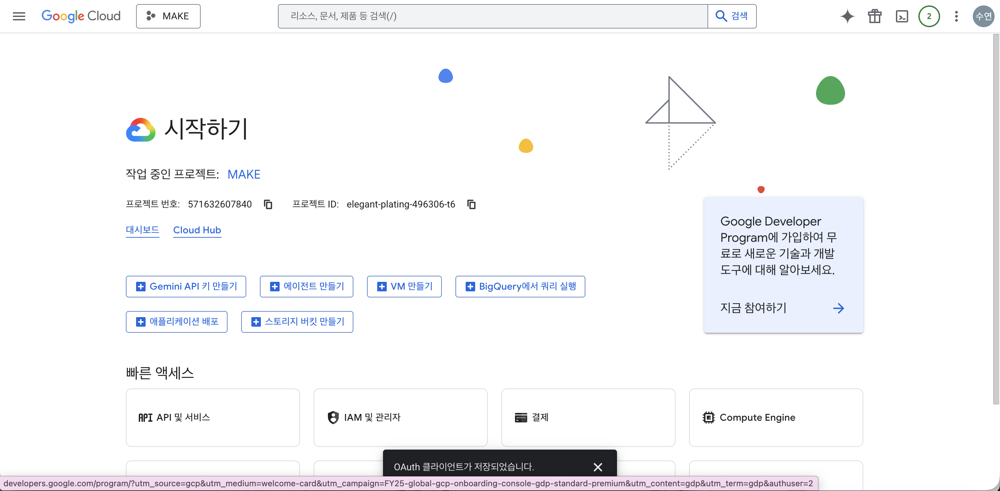
상단의 프로젝트 선택 영역을 클릭해 프로젝트 목록을 엽니다. 오른쪽 위의 새 프로젝트 버튼을 누릅니다.
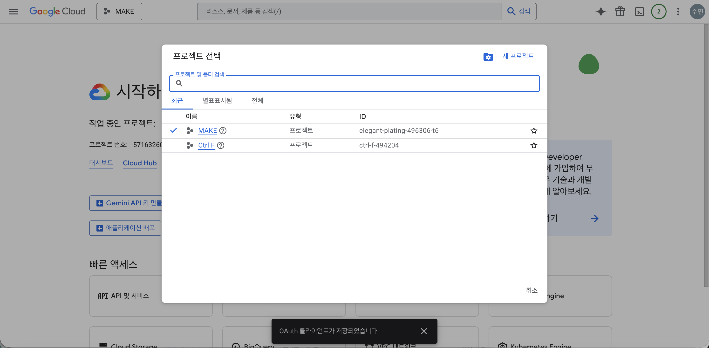
프로젝트 이름을 입력합니다. 예: MAKE (0514)처럼 알아보기 쉬운 이름.
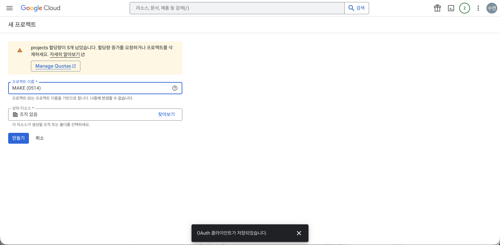
특수문자/공백 없이 입력하면 ID도 깔끔하게 생성됩니다 (예: MAKE0514). 만들기 버튼을 누릅니다.
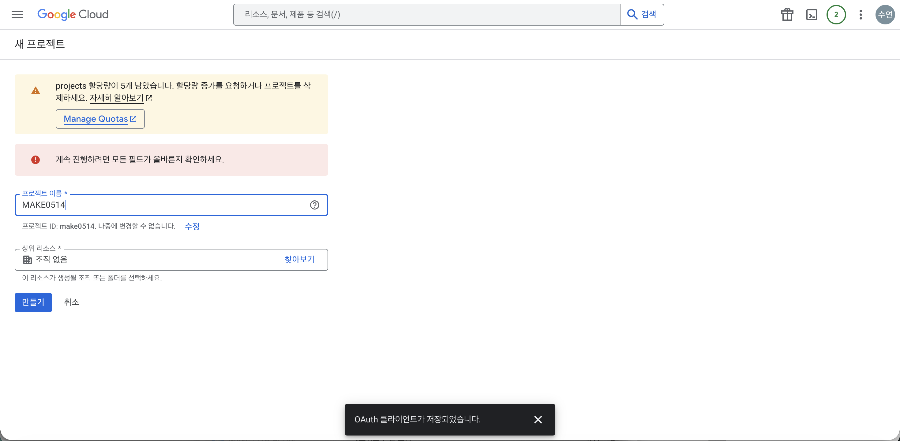
왼쪽 메뉴 으로 이동하면 Google 인증 플랫폼 화면이 보입니다. 시작하기 버튼을 클릭합니다.
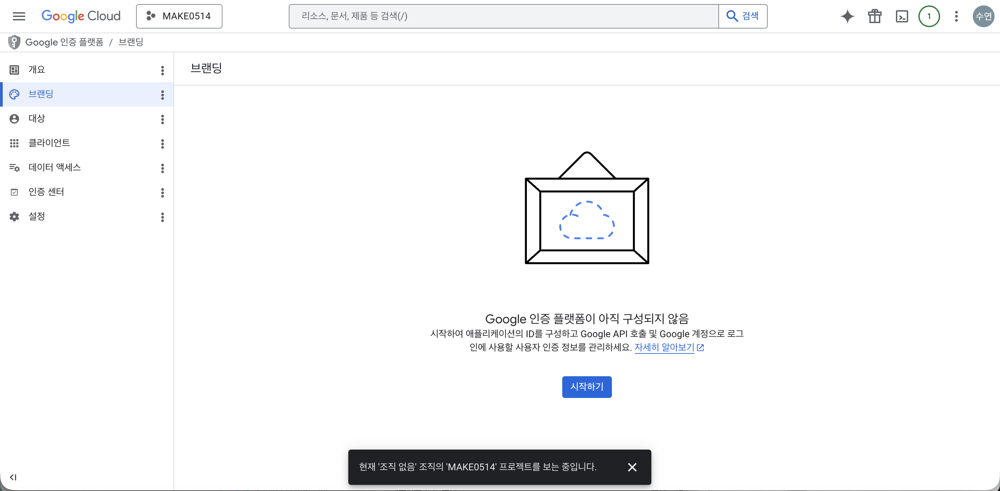
MAKE입력 후 다음.
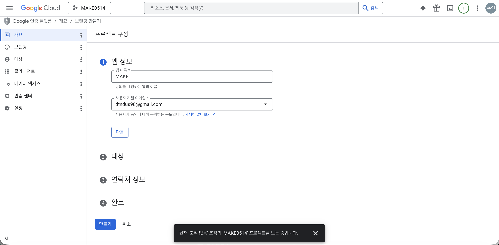
외부(External)를 선택합니다. Google 계정이 있는 모든 테스트 사용자가 쓸 수 있도록 하는 옵션입니다.
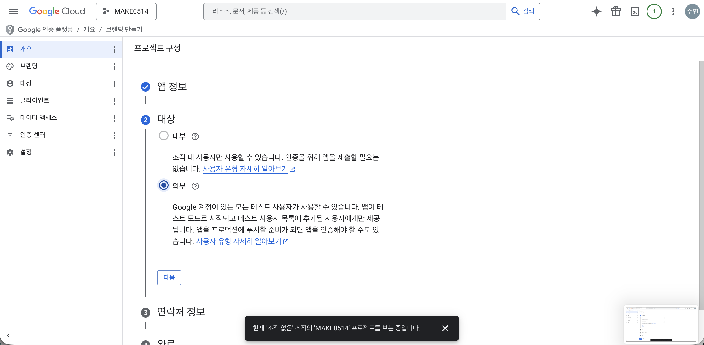
Google에서 프로젝트 변경 사항을 알릴 때 사용하는 이메일을 입력합니다. 본인 이메일로.
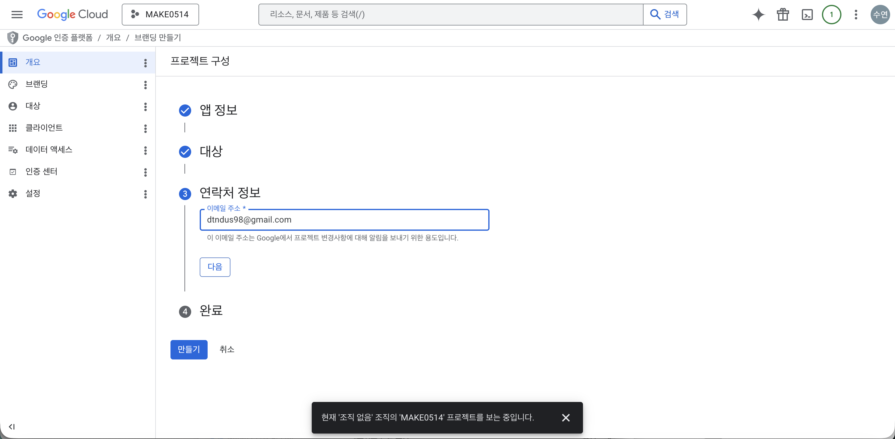
Google API 서비스 사용자 데이터 정책에 동의하는 체크박스를 켜고 계속 → 만들기를 누릅니다.
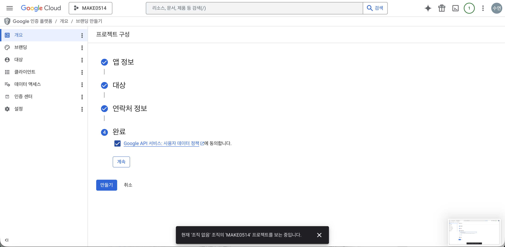
만들기가 완료되면 OAuth 개요 화면이 열립니다. 이 화면에서 OAuth 클라이언트 만들기 버튼을 누를 수 있지만, 일단 먼저 테스트 사용자를 추가합니다.
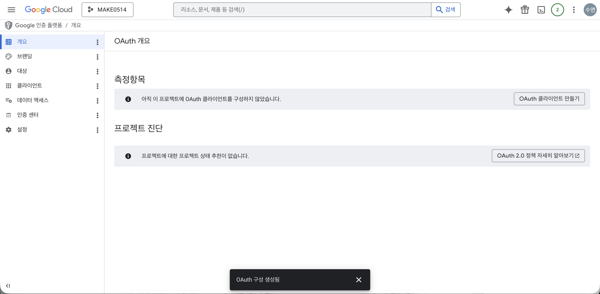
왼쪽 메뉴에서 클릭. 테스트 사용자 영역의 + Add users 버튼을 확인합니다.
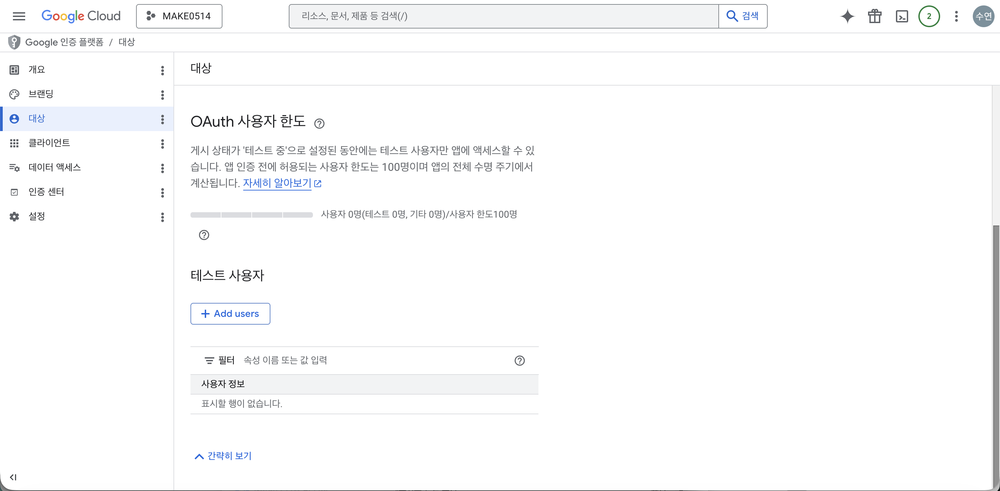
실제 Make 연결에 사용할 본인 이메일을 추가합니다. 추가 후 사용자 정보 영역에 이메일이 1개 등록됩니다.
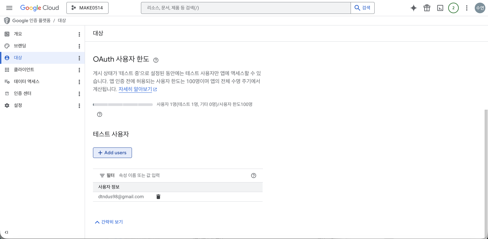
access_denied / restricted scopes 오류가 납니다.왼쪽 메뉴 이동. 상단 + 클라이언트 만들기 클릭.
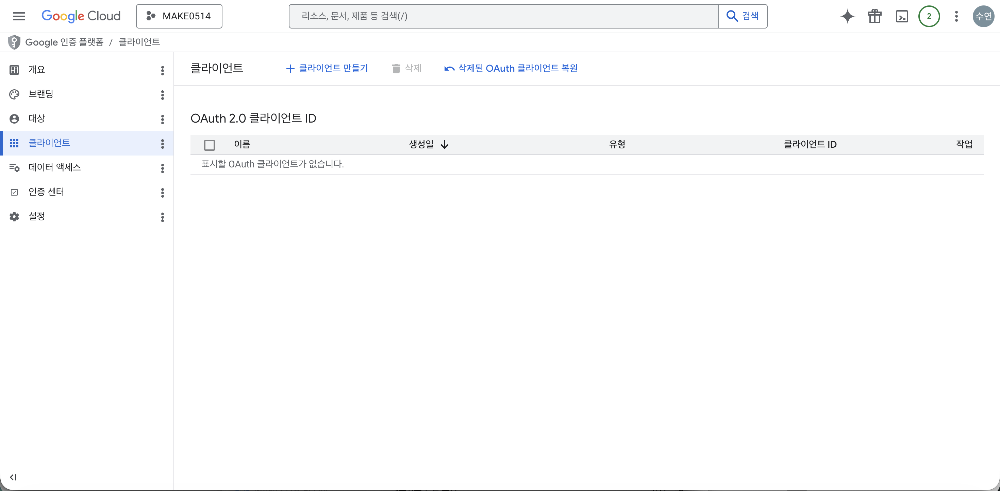
MAKE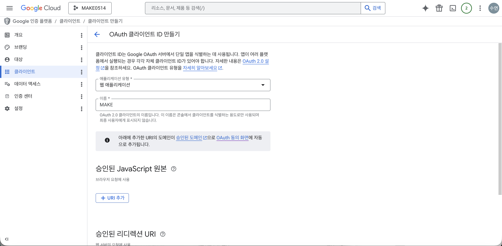
스크롤을 내려 승인된 리디렉션 URI 영역에서 + URI 추가를 누르고 아래 주소를 정확히 입력합니다.
redirect_uri_mismatch 오류가 발생합니다.입력 후 만들기.
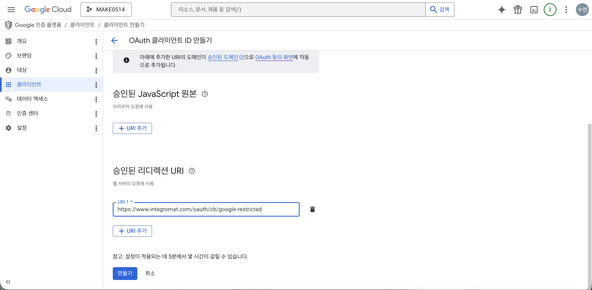
https://www.integromat.com/oauth/cb/google-restricted.생성 완료 모달에 클라이언트 ID와 클라이언트 보안 비밀번호가 표시됩니다. 이 2개를 안전한 곳에 복사해 두세요.
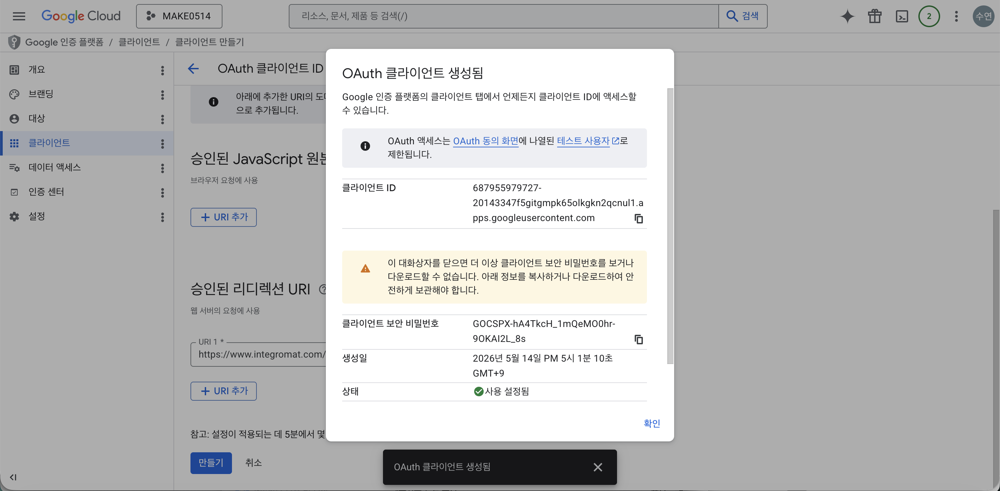
이제 Google Drive API를 활성화할 차례입니다. 왼쪽 햄버거 메뉴 클릭.
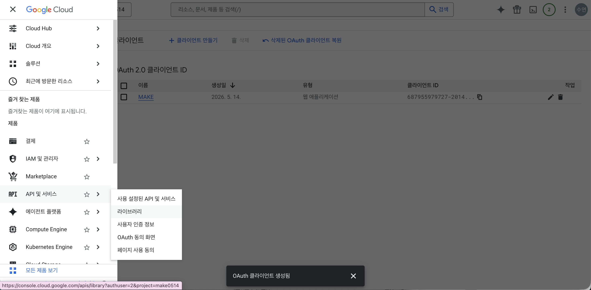
검색창에 google drive를 입력하면 관련 API 목록이 나옵니다. 첫 번째 Google Drive API 카드를 클릭합니다.
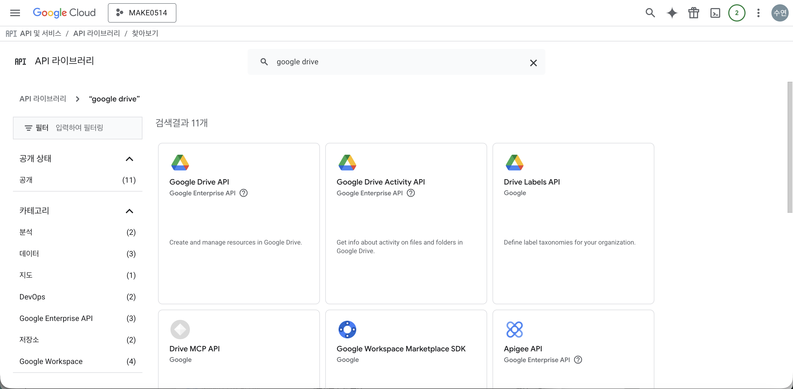
Google Drive API 상세 페이지에서 파란색 사용 버튼을 클릭합니다.
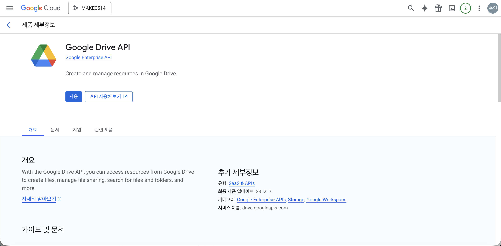
측정항목 화면이 뜨면 활성화 완료. 상태: 사용 설정됨이 표시됩니다.
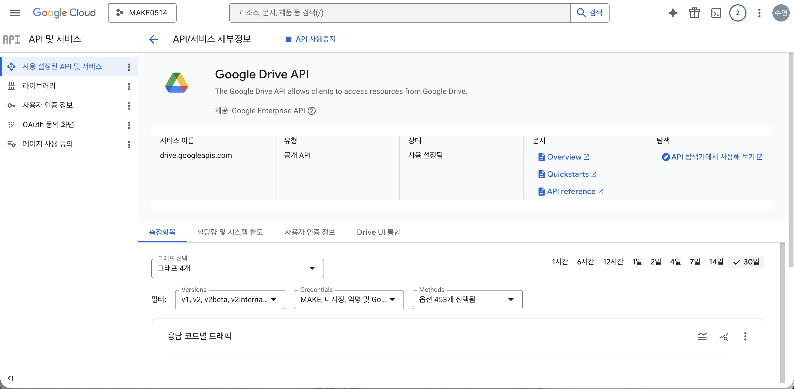
왼쪽 메뉴 → 만든 OAuth 클라이언트 클릭. 우측에서 Client ID와 Client Secret을 다시 확인할 수 있습니다.
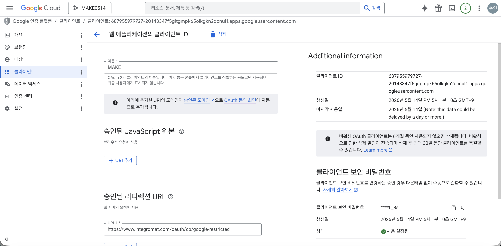
google-restricted로 들어가 있는지 마지막 점검.완료되면 Google Drive 모듈이 정상 연결됩니다. ✅
원인
google-restricted가 아닌 다른 값으로 등록)해결 — 아래 주소를 그대로 등록하세요.
원인
해결
원인 — Google Drive API 미활성화
해결
→ Step 17 ~ 20 참고.